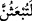
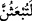

kâfirleri, öldükten sonra asla diriltilmeyeceklerini, kabirlerinden kaldırılıp
çıkarılmayacaklarını iddiâ ettiler, demek olur.
Kadı Şureyh der ki: Herşeyin bir künyesi vardır. Yalanı temsil eden de “zeamû”
fiilidir.
Muhadramlardan birisi oğluna demiş ki: “Bana konuştuğun sözden iki kelime
bağışla/bunları kullanma. Bunlar zan ifâde eden “zeame” kelimesi ile “sonra, ileride”
anlamına gelen “sevfe” kelimeleridir. Bir kimsenin zan ifâde eden “zeame” fiilinin ve
benzerlerini çok kullanması hiç hoş değildir. Çünkü bu gibi fiiller insanın duyduğu
herşeyi konuşması anlamını ifâde eder ki, bu da bir insana yalan olarak yeter. Bir insan
konuşmak isteyince, kesin olan şeyi konuşmalı, şüpheli olan şeylerden bahsetmemelidir.
İnsan böylece her duyduğunu konuşmaktan kurtulmuş ve bunun neticesinde yalandan
korunmuş olur. el-Makasıdu’l-hasene’de böyle ifâde edilmektedir.
Onlara cevap vermek ve olmaz dedikleri şeyi isbat ederek iddiâlarını iptal etmek için
“De ki hayır” diriltileceksiniz. Çünkü arapçada “belâ” kelimesi kendisinden önce yer
alan olumsuz cümleyi olumluya çevirme anlamı ifâde eder. Âyette ki: “Rabbime
andolsun ki mutlaka diriltileceksiniz, sonra yaptıklarınız size haber verilecektir.”
ifâdesi başlı başına müstakil bir cümle olup, yukarda geçen “de ki” emrinin kapsamına
dâhildir ve “belâ” kelimesinin ifâde ettiği öldükten sonra dirilmeyi pekiştirmektedir.
Burada, öldükten sonra dirilmenin gerçekleşeceğini iki açıdan pekiştirme vardır. “Ve
rabbî” lafzı bir yemin ifâdesidir. Bu ifâdenin âyetin bu noktasında tercih edilmesi,
herhalde öldükten sonra dirilme olayında, Yüce Allah’ın bilgisinin tamlığını, kemalini
ortaya koymasından, zâhir ve cismânî nimetlerle, bâtınî ve rûhâni nimetlerle birlikte
terbiyenin ilâhî inâyetin tercih edilmesinden dolayıdır.
“__WORD__ cümlesi kendisinden önce geçen kasem’in/yeminin cevabıdır. Kasem dolayısı
ile te’kid lamı ile gelmiştir. Âyet metninde geçen “sümme” kıyamet günü uzun olacağı
için zamanda sonralık ifâde edebileceği gibi, makam itibari ile bir sonralık da ifâde
edebilir. el-Lübab’ın sözünün zâhirine göre “ve rabbî” ifâdesi daha öncesine bağlı bir
kasemdir. Yine bu ifâdeye göre söz “ve rabbî” ifâdesinde tamam olmuştur. Bu nedenle
orada vakf yapmak uygun olur. “__WORD__ ifâdesiyle ona atfedilen ifâde ikisi birlikte
mukadder ve yeni başlayan cümle olarak birinciyi te’kid etmek üzere bir başka kasemin
cevabı olur. Müşrikler öldükten sonra dirilmeyi inkâr ettikleri gibi Hz. Peygamber’in
(s.a.) risâletini de inkâr etmelerine karşılık kasem ile birlikte öldükten sonra
diriltileceklerinin haber verilmesinin faydası; herhalde şiddetli ve pekiştirilmeli bir
biçimde onların iddiâlarını iptal etmektir. Böylece Allah’ın kendisine insaf takdir ettiği
kimselerin bundan etkilenmesi, takdir etmediği mahrum olanlar aleyhine ise hüccetin,
güçlü olması ve pekişmesi amaçlanmıştır.
“Bu” zikredilen öldükten sonra dirilme ve cezâ “Allah’a göre kolaydır.” Yâni bu
zikredilenler, Allah’ın kudretinin tam olması ve maddenin bunu kabul etmesi dolayısı
ile Allah’a kolaydır.